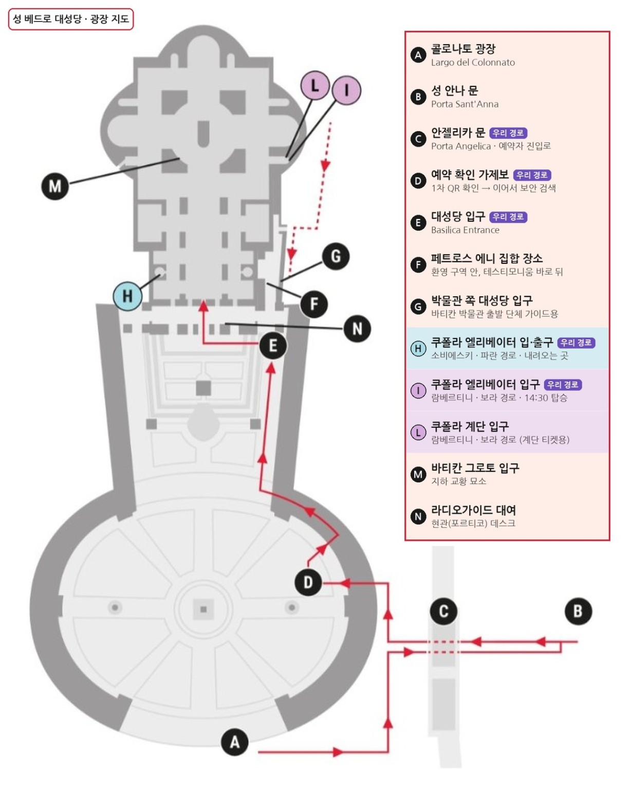

성 베드로 대성당
쿠폴라 가이드
엘리베이터로 쿠폴라에 올랐다가, 내려오는 길에 바로 대성당 안으로 이어지는 코스입니다. 예약 메일 내용을 바탕으로 정리했습니다.
백팩·캐리어는 들고 들어갈 수 없어요
캐리어, 배낭(백팩), 부피 큰 가방은 반입 금지이고 짐 보관소도 없습니다(유모차 두는 곳만 있음). 피렌체에서 산 백팩도 해당돼요. 작은 크로스백이나 손가방만 들고 가고, 나머지 짐은 숙소에 맡기거나 짐 보관 서비스를 이용하세요.
귀로 걷는 성 베드로 20개 MP3
총 약 16분 · 한국어 음성. 항목을 누르면 바로 재생됩니다. 해설은 듣기 편하게 재구성했으며, 아래 원문과 표현이 다를 수 있어요.
오프라인으로 들으려면 각 항목의 MP3 저장을 눌러 주세요. 재생목록 파일만으로는 오프라인 재생이 되지 않습니다.
검색 결과가 없습니다.
광장 지도 한국어
빨간 화살표가 예약자 동선입니다. 보라색 I에서 엘리베이터를 타고, 하늘색 H로 내려와 대성당 안으로 이어집니다. 지도를 누르면 크게 볼 수 있어요.

새 창에서 원본 크기로 열기 ↗ (손가락으로 확대할 수 있어요)
내일의 동선
알파벳은 위 지도의 표시 기호입니다. 현장 안내판과 노란 조끼를 입은 직원이 길을 안내해 줍니다.
- 13:45권장
CVia di Porta Angelica로 가기
성 베드로 광장을 바라봤을 때 오른쪽 열주(콜로네이드) 바깥 길입니다. 길 오른쪽으로 걷다가 Porta Sant'Anna(성 안나 문)를 지나면 “온라인 예약(online bookings)” 표지판을 따라가세요.
- 14:00늦어도
D1차 · QR 확인 (광장 안 가제보)
직원이 6명 각자의 QR을 확인합니다. 메일 안내는 예약 시간 최소 30분 전 광장 도착입니다.
- 14:05
2차 · 보안 검색 (콜로네이드 아래)
이탈리아 경찰이 공항식으로 검색합니다. 붐빌 때는 여기서 지연될 수 있어요.
- 14:15까지
E→I대성당 입구에서 Lambertini 엘리베이터로
대성당 입구(E)로 들어가 VIOLET 경로 표시를 따라 Lambertini 엘리베이터 입구(I)로 갑니다. 예약 시간 15분 전까지 도착해야 하고, 여기서 QR을 한 번 더 확인합니다.
- 14:30
쿠폴라 오르기
엘리베이터로 지붕 테라스까지 오른 뒤, 돔 안쪽 회랑을 거쳐 꼭대기까지 약 320계단을 걸어 올라갑니다. 아래 ‘쿠폴라 오르는 법’을 참고하세요.
- 15:30무렵
H내려와서 대성당 안으로
꼭대기에서 내려오면 Sobieski 엘리베이터(H)나 계단으로 내려가 대성당 내부로 바로 이어집니다. 다시 줄 설 필요가 없어요.
- 15:30~16:30
대성당 관람
1시간 정도 둘러보면 좋아요. 볼거리는 아래 ‘대성당 해설’에 걷는 순서대로 정리했습니다.
- 16:30선택
M바티칸 그로토 (지하 교황 묘소)
그로토는 출구가 바깥으로 이어지는 한 방향 동선이라, 들어간다면 맨 마지막에 가세요.
챙길 것
광장에서 기다리며 5분 해설
QR 확인 줄에 서 있는 동안 고개를 들어 보세요. 지금 서 계신 이 광장부터가 작품입니다.
두 팔로 안아 주는 광장
바로크의 거장 베르니니가 1656년부터 11년 동안 만든 광장이에요. 양쪽으로 휘어진 회랑(콜로네이드)은 기둥이 4줄, 모두 284개이고, 지붕 위에는 성인 조각상 140개가 서 있습니다. 베르니니는 이 모양을 “어머니인 교회가 두 팔을 벌려 세상 사람들을 안아 주는 모습”이라고 설명했어요.
직접 해 보세요 오벨리스크와 양쪽 분수 사이 바닥에 ‘Centro del Colonnato’라고 새겨진 둥근 돌판이 있어요. 그 위에 서서 회랑을 보면 4줄 기둥이 겹쳐져 한 줄처럼 보입니다. 아이들이 무척 신기해해요.
광장 한가운데 이집트 오벨리스크
높이 약 25m의 이 돌기둥은 이집트에서 만들어져 로마 황제 칼리굴라가 배로 실어 온 것입니다. 원래는 지금 대성당 왼편에 있던 네로 황제의 경기장에 서 있었는데, 베드로가 바로 그 근처에서 거꾸로 십자가에 매달려 순교했다고 전해져요. 그러니까 이 오벨리스크는 베드로의 마지막 순간을 지켜본 증인인 셈이죠. 1586년에 지금 자리로 옮겼습니다.
정면과 ‘강복의 발코니’
정면은 카를로 마데르노가 1612년에 완성했어요. 꼭대기에는 예수님, 세례자 요한, 그리고 사도 11명의 조각상이 서 있습니다. 베드로가 없는 이유는 계단 아래에서 열쇠를 든 채 여러분을 맞이하고 있기 때문이에요. 정면 가운데 발코니가 새 교황이 선출되면 처음 모습을 드러내는 곳으로, 2025년 5월 레오 14세 교황도 저기서 첫 인사를 했습니다.
쿠폴라 오르는 법
- 엘리베이터 → 지붕 테라스. 대성당 지붕 위로 나옵니다. 정면 꼭대기에 선 거대한 성인 조각상들을 바로 뒤에서 볼 수 있고, 미켈란젤로의 돔을 가장 가까이에서 올려다보는 자리이기도 해요.
- 돔 안쪽 회랑. 돔 내부 둘레를 걷는 난간 통로입니다. 저 아래 대성당 바닥과 발다키노가 장난감처럼 내려다보여요. 눈앞의 금빛 띠에 쓰인 라틴어 글자는 하나가 약 2m로 어른 키보다 큽니다. 내용은 마태오복음의 이 구절이에요.
TU ES PETRUS ET SUPER HANC PETRAM AEDIFICABO ECCLESIAM MEAM…
‘베드로(Petrus)’라는 이름 자체가 ‘바위’라는 뜻이에요. 그 베드로가 묻힌 자리 위에 이 성당을 세웠으니, 돔 전체가 이 문장을 증명하는 셈입니다. 회랑 벽의 모자이크도 가까이서 보면 작은 유리 조각이 하나하나 박혀 있어요.
“너는 베드로이다. 내가 이 반석 위에 내 교회를 세우리라. 너에게 하늘나라의 열쇠를 주겠다.” - 약 320계단. 돔의 이중 벽 사이로 오릅니다. 위로 갈수록 통로가 좁아지고 벽이 돔 곡선을 따라 기울어지며, 마지막은 밧줄을 잡고 오르는 좁은 나선계단입니다.
- 꼭대기 전망대. 열쇠 구멍 모양의 성 베드로 광장, 바티칸 정원, 로마 시내가 한눈에 들어옵니다. 사진은 여기서.
아이들과 오를 때
- 계단은 한 방향으로만 진행해 중간에 되돌아가기 어렵습니다. 출발 전 화장실을 다녀오세요.
- 좁은 구간에서는 아이 손을 잡고 앞뒤로 어른이 서세요.
- 폐소공포증이나 심장·호흡기 문제가 있는 분은 무리하지 마세요.
대성당 해설 걷는 순서대로
쿠폴라에서 내려오면 지도의 H, 즉 정문 쪽 왼편으로 나옵니다. 거기서 출발해 정문 → 오른쪽 통로 → 중앙 → 맨 안쪽 → 왼쪽으로 크게 한 바퀴 도는 순서로 정리했어요.
세상에서 가장 큰 성당에 오신 것을 환영합니다
먼저 정문 쪽에서 안쪽을 한번 바라보세요. 내부 길이가 약 190m로, 축구장 두 개를 이어 놓은 것에 가까워요. 그런데 막상 서 보면 그렇게까지 커 보이지 않죠? 모든 것이 같은 비율로 거대해서 눈이 크기를 착각하기 때문이에요.
확인해 보세요 첫 번째 기둥에 붙은 성수반을 아기 천사 둘이 받치고 있어요. 멀리서는 아기만 해 보이지만, 가까이 가서 아이와 나란히 서 보면 천사 키가 2m 가까이 됩니다. 중앙 통로 바닥에는 세계 다른 큰 성당들의 길이가 금색 글자로 표시돼 있어서, 여기가 얼마나 긴지 비교할 수 있어요.
붉은 반암 원판과 ‘거룩한 문’
정문 바로 안쪽 바닥에 커다란 붉은 둥근 돌이 박혀 있어요. 800년 성탄절에 카롤루스 대제(샤를마뉴)가 옛 성 베드로 성당에서 황제관을 받을 때 무릎 꿇은 돌이라고 전해집니다. 서유럽 ‘신성로마제국’ 역사가 시작된 자리죠.
정문 벽 가장 오른쪽 문은 ‘거룩한 문’이에요. 25년마다 돌아오는 희년에만 열리는데, 2025년 희년이 끝나 지금은 다시 닫혀 있습니다.
미켈란젤로의 피에타
오늘의 하이라이트 중 하나예요. 십자가에서 내려진 예수님을 성모 마리아가 무릎에 안고 있는 조각으로, 미켈란젤로가 겨우 스물네 살 때 대리석 한 덩어리를 깎아 완성했습니다(1499년).
성모님이 아들보다 오히려 더 젊어 보이죠? 왜 그렇게 젊게 만들었냐는 질문에 미켈란젤로는 “순결한 영혼은 늙지 않는다”고 답했다고 전해집니다. 그리고 성모님 가슴을 가로지르는 띠를 보세요. 사람들이 이 작품을 다른 조각가 것이라고 수군대자, 화가 난 미켈란젤로가 밤에 몰래 들어와 자기 이름을 새겼다고 해요. 그가 평생 이름을 새긴 작품은 이것 하나뿐입니다.
왜 유리 뒤에 있을까 1972년에 한 남자가 망치로 성모님 얼굴과 팔을 내리친 사건이 있었어요. 복원한 뒤로는 방탄유리 너머로만 볼 수 있습니다. 사람이 많으니 앞쪽 가운데 자리가 나면 잠깐 서서 보세요.
성 요한 바오로 2세 교황의 무덤
우리에게 특히 친근한 교황님이에요. 1984년과 1989년 두 번 한국을 찾았고, 1984년 방한 때는 여의도에서 김대건 신부를 비롯한 한국 순교자 103위를 성인으로 선포했습니다. 바티칸 밖에서 거행된 시성식으로도 유명해요. 2005년 선종했고, 2014년 성인이 되었습니다.
성 베드로 청동상
의자에 앉아 오른손으로 축복하고 왼손에 천국의 열쇠를 든 베드로예요. 13세기 조각가 아르놀포 디 캄비오의 작품으로 전해집니다. 오른발을 보세요. 수백 년 동안 순례자들이 만지고 입을 맞춰 발가락이 거의 닳아 없어졌어요. 매년 6월 29일 베드로 축일에는 이 동상에 교황 예복을 입힌답니다.
베르니니의 발다키노와 베드로의 무덤
꽈배기처럼 꼬인 청동 기둥 네 개가 받치는 거대한 지붕 장식이에요. 높이가 약 29m, 아파트 10층 정도입니다. 베르니니가 20대 중반에 맡아 1634년에 완성했어요. 청동이 모자라 판테온 현관의 청동을 뜯어 썼다는 이야기가 전해지는데, 로마 사람들은 이를 두고 “야만인도 안 한 짓을 바르베리니가 했다”고 비꼬았답니다. 바르베리니는 당시 교황 우르바노 8세의 가문 이름이에요.
발다키노 바로 아래가 교황만 미사를 드릴 수 있는 교황 제대이고, 그 앞에 아래로 내려가는 반원형 공간(고백의 제대)이 있어요. 그 아래 땅속 깊은 곳에 베드로의 무덤이 있습니다. 2,000년 전 순교한 어부 베드로의 무덤 위에 4세기 콘스탄티누스 황제가 첫 성당을 세웠고, 그 자리에 지금 성당을 다시 지은 거예요. 이 성당이 왜 하필 여기 있는지에 대한 답이 바로 이 자리입니다.
숨은 그림 기둥을 타고 올라가는 금빛 꿀벌을 찾아보세요. 바르베리니 가문의 문장이에요. 기둥 받침 대리석의 문장 장식에는 여인의 얼굴이 조금씩 변해 가는 조각이 있는데, 출산 과정을 표현했다는 재미있는 해석이 전해집니다.
방금 우리가 저 위에 있었어요
이제 고개를 젖혀 돔을 올려다보세요. 지름 약 42m, 꼭대기 십자가까지 약 136m입니다. 아까 걸었던 금빛 글자 띠와 회랑이 보이고, 그 위 가장 작은 창 근처가 우리가 서 있던 전망대예요. 아이들에게 “우리가 저기 있었어” 하고 가리켜 주기 딱 좋은 순간입니다.
미켈란젤로가 일흔이 넘어 설계했지만, 완성을 보지 못하고 세상을 떠났어요. 제자 자코모 델라 포르타가 1590년에 마무리했습니다.
돔을 받치는 네 기둥에는 4m가 넘는 성인 조각상이 서 있어요. 예수님 옆구리를 창으로 찌른 로마 병사 롱기누스(베르니니 작), 예수님의 십자가를 찾았다는 헬레나, 예수님 얼굴을 닦아 드린 베로니카, 베드로의 동생 안드레아입니다. 모두 이 성당에 보관된 유물과 관련된 인물이에요.
성 베드로의 의자와 빛나는 비둘기
발다키노 기둥 사이로 저 안쪽을 보면 금빛으로 폭발하는 듯한 장식이 보여요. 베르니니가 말년에 10년 가까이 매달려 1666년에 완성한 ‘성 베드로의 의자’입니다. 청동 왕좌 안에 베드로가 썼다고 전해 온 오래된 나무 의자가 들어 있어요. 이 의자를 교회의 큰 스승(교부) 네 명이 받치고 있는데, 앞의 두 명은 서방 교회, 뒤의 두 명은 동방 교회를 대표해요. 동서 교회가 함께 베드로의 권위를 떠받친다는 뜻이죠.
그 위 노란 유리창 한가운데 날개를 편 비둘기는 성령을 상징해요. 이 성당은 정면이 동쪽, 안쪽이 서쪽을 향해 있어서, 맑은 날 오후에는 서쪽 햇살이 이 창을 통과해 금빛 장식 전체가 빛납니다. 우리가 들어가는 오후 시간이 마침 그때예요.
베르니니의 마지막 걸작, 해골과 모래시계
안쪽에서 왼쪽으로 돌아 나오다 보면, 문 위에 붉은 대리석 휘장이 드리워진 교황 알렉산데르 7세의 무덤이 있어요. 휘장 아래에서 금빛 해골이 모래시계를 들어 올리고 있습니다. “당신의 시간도 흘러가고 있다”는 뜻이에요. 여든이 다 된 베르니니가 만든 마지막 대작이라, 그 의미가 더 묵직하게 다가옵니다.
그림처럼 보이지만 사실은 모자이크
경당마다 걸린 커다란 제단화를 가까이서 보세요. 붓 자국 대신 작은 돌과 유리 조각이 보일 거예요. 성당 안이 습해서 그림이 상하자 대부분을 모자이크로 바꿨습니다. 라파엘로의 ‘그리스도의 변모’ 같은 명화도 여기서는 모자이크 사본이에요. 수백 년이 지나도 색이 바래지 않습니다.
미리 알려 주세요 오른쪽 통로 쪽 제대 아래에는 성 요한 23세 교황의 시신이 유리관에 안치돼 있어요. 아이들이 놀랄 수 있으니 미리 이야기해 주세요.
바티칸 그로토 (지하 교황 묘소)
대성당 바닥 아래, 옛 성당 바닥 높이에 역대 교황들의 무덤이 모여 있어요. 2022년 선종한 베네딕토 16세 교황도 이곳에 잠들어 있습니다. 출구가 바로 바깥으로 이어지는 한 방향 동선이라 맨 마지막에 들르세요.
나가는 길
출구 근처에서 파랑·노랑·빨강 줄무늬 제복의 스위스 근위대를 볼 수 있어요. 1506년부터 교황을 지켜 온 세계에서 가장 작은 군대입니다.
아이들과 함께하는 보물찾기
- 닳아 버린 발성 베드로 청동상의 반들반들한 오른발
- 숨은 꿀벌발다키노 기둥을 기어오르는 금빛 꿀벌
- 거인 아기 천사성수반을 든 천사와 키 재기
- 해골과 모래시계알렉산데르 7세 무덤 위
- 빛나는 비둘기맨 안쪽 노란 창 한가운데
- 바닥의 금색 글자다른 나라 성당 이름 찾기
문제가 생기면
- 늦을 것 같으면 현장의 방문객 안내(Visitor Assistance)나 노란 조끼 직원에게 바로 말하세요. 대성당 단독 QR은 예약 시간 15분 전부터 15분 후까지만 유효합니다.
- 보안 검색이 붐비면 지연될 수 있다고 메일에도 적혀 있으니, 30분 전 도착을 지켜 주세요.
- 예약 문의 이메일
booking@basilicasanpietro.va - 예약 메일 맨 위의 Booking code를 캡처해 두면 문의할 때 편합니다.